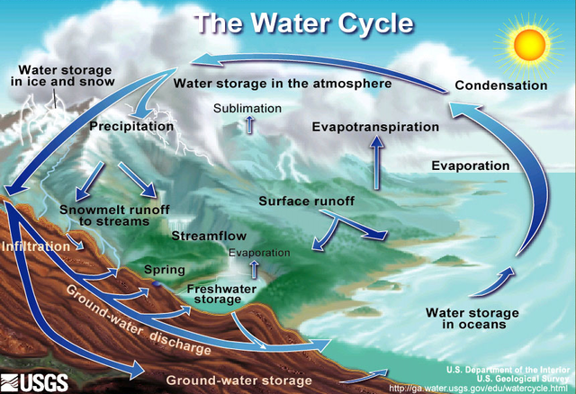

Water cycle, cycle that involves the continuous circulation of water in the Earth-atmosphere system. Of the many processes involved in the water cycle, the most important are evaporation, transpiration, condensation, precipitation, and runoff.
The water cycle, also known as the hydrologic cycle, describes the continuous movement of water within the Earth and atmosphere. It is a complex system that includes many different processes.